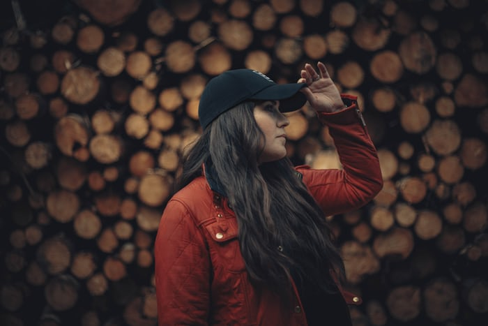

The Beginning | Maria Luty
Beginning from childhood, where my days were sweet, long and always playing. My family, especially my Nana, enjoyed finding new art pieces. Here it refined my keen eye for detail and as a child, when you know nothing of the world, there is so much inspiration to be found.
How I work
Being inspired and motivated is important for artists. But more importantly than that is the drive to learn more. For me personally, I enjoy working in a clean environment but also relaxing. In this creative space I found myself being the most productive after I have eaten breakfast around 9 til 11. While also watching the sky rise which helps keep my mind relaxed and inspired